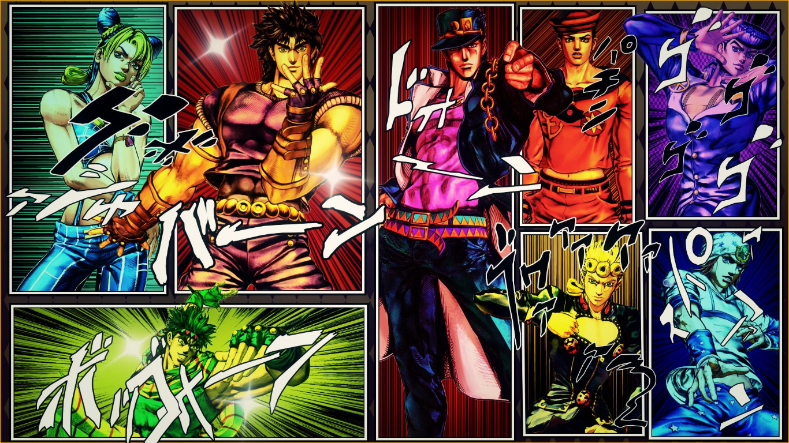
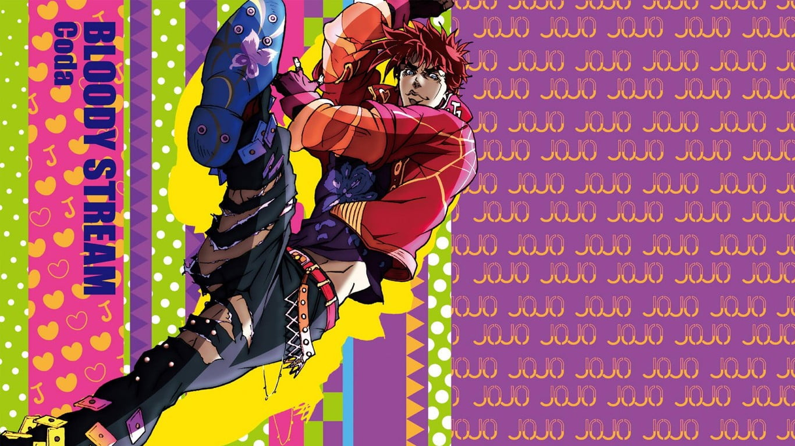

<!DOCTYPE html>
<html lang="es"></html>
<html>  
    <head>
        <meta charsetw  f   ="utf-8">
        <meta name="author" content="Raúl Hernández Salgado"></metaname> 
        <meta name="description" content="Another JoJo Fanpage"/>
        <link rel="stylesheet" href="Gurren.css">

<title>
  Jojo's Bizarre Adventure
</title>
    </head>
    <body>
    <div class="JoJoIntro">
            <header class="Title">
              <p><h1>What The F*ck is Jojo?</h1></p>          
            </header>


        
        <audio src="Audio/JoJo's_Bizarre_Adventure_Opening_3_Full『STAND_PROUD』.mp3" controls loop autoplay preload="metadata">
        </audio>        
        <form><label> JoJo Name </label></form>
        <input type="text"></br>

        <form><label> Ability/Stand </label></form>
        <input type="text">


    </br> 
        <!--Introduction to JoJo-->
        <p>Every one knows someone who's always talking about Jojo and at some random moment says there's a Jojo reference. Let me explain this, Jojo's Bizzarre Adventure is an anime series animated by David Production in Japan based on the manga made by Hirohiko Araki. I hope this page helps you to understand every meme, reference and everything that comes up with JoJo </p>
        <p>This whole story contents a mix of cultures and time </p>
        <p>Something we need to keep in mind is that for every JoJo part there's another protagonist wich is relative to previous ones, JoJo is somekind of nickname given to the main character by a relative, friend or by some random guy that you will never see again and never care about the exagerated emphasis to their bodies or actions. So prepare yourself to some surprises in the way. Clicking om the image will take you to wacth the first opening of each part </p>
        <p>I'm writting about JoJo's in a very few detail, so remember this page might not be accurate itself</p><br>


        <dl>
            <dt><b><h3>First Universe</h3></b></dt>
            <dd>Jonathan Joestar</dd>
            <dd>Joseph Joestar</dd>
            <dd>Jotaro Kujo</dd>
            <dd>Giorno Giovanna</dd>
            <dd>Jolyne Cujoh</dd>
        </dl><br>   

        <dl>
           <dt><b><h3>Second Universe</h3></b></dt>
           <dd>Johnny Joestar</dd>
           <dd>Josuke Higashikata</dd>
           <dd>Jodio Joestar</dd>

        </dl>        
    </div>
    <div class="JonathanJoestar">
        <header class="JoJo1PB"><b><i><h1>Phantom Blood</h1></i></b></header>
        <!--Explaining every part guiding by its protagonist-->
        <a 
        id="JPB" href="https://www.youtube.com/watch?v=eZkehdHmXO8">
            
        </a>

        <!--Writing about Jonathan Joestar-->

          <p>&gt;Jonathan Joestar</p>
          <p>First of all, when and where everthing started. The story starts with Jonathan in England at 1888. In this first part, JoJo faces Dio Brando who once was his adopted brother.</p>
          <p>This happens after Dio tried to kill JoJo's father and became a vampire, destroyed JoJo's house and killed his dog</p>
          <p>JoJo trains an martial art called 'Hamon', tought by William Zeppeli. wich consists in concentrating sun energy in your body and use it against vampires</p>
          <p>After the legendary final battle, JoJo manages to marry with Erina Pendleton and goes on vacation with her but during their travel JoJo fights with Dio again, in a last battle, where both of them apparently died and Erina is the only survivor  </p>
    </div>
    <div class="JosephJoestar">
        <header class="JoJo2BT"><b><i><h1>Battle Tendency</h1></i></b></header>
        <a 
        href="https://www.youtube.com/watch?v=_ih7vT0CrLE">
            
        </a>
        <!--Writing about Joseph Joestar-->
         
         <p>&gt;Joseph Joestar</p>
         <p>50 years after, we meet Joseph (The 2nd JoJo), Joseph is Jonathan's grandson. Without knowing it, Joseph could use the 'Hamon' by mere instinct </p>
         <p>This part is about how Joseph fights against the 'Pillar Men' who are the Stone Mask's creators</p>
         <p>JoJo meets Caesar Zeppeli, who is William's Zeppeli grandson, after him, he meets LiSA LiSA, her new teacher</p>
         <p>They learn more about the history of Hamon and strengthen theirselfs, but they face the Pillar Men earlier than expected and JoJo saves Caesar's live and by consequence JoJo has to become more stronger within 30 days time.</p>
         <p>One by one, the duo fights against them</p>
         <p>This part ends with JoJo alive and getting married with Suzi Q, LiSA LiSA's servant</p>
    </div>
    <div class="JotaroKujo">


        <a href="https://www.youtube.com/watch?v=eLwuQwKs4yA">
            
        </a>
        <!--Writing about Jotaro Kujo-->
         <b><i><h1>Stardust Crusaders</h1></i></b>
         <p>&gt;Jotaro Kujo</p>         
         <p>Other 50 years have passed and we meet another JoJo, Joseph Joestar's grandson. Who is in jail because he wanted to, in order to protect himself and people's security of what he calls an evil spirit which is inseide him</p>
         <p>Here appears Jospeh Joestar, who tells him that this is not an evil spirit, this is a <b>stand</b> a term which we're using hereinafter. This "stand" is the projection of the master's (user) personality, desires, will and soul as well as it's habilities </p> 
         <p>Jotaro's Stand is Star PLatinum, which is based in the Tarot cards. Joseph also has a Stand which is Hermit Purple</p>
         <p>Both Jotaro and Joseph face the biggest villain Joestar family ever had, Dio Brando, who comes back with a stand</p>
         <p>The sudden stand appearance for each Joestar member is related to Dio's awekening and obtaining stand. Dio's stand is 'The World' who has the ability of stopping time</p>
         <p>In this new part is a travel from Japan to Egypt, a flight that would take some hours, it becomes a travelling adventure on sky, sea and earth </p>
         <p>facing different stands in the way they manage to reach Dio and defeat him  </p>
    </div>
    <div class="JosukeHigashikata">

        <a href="https://www.youtube.com/watch?v=-xRnAgw0i2E&list=PLSEoGpRPA4Ug0JTloFngUosAy0qC5fGpZ&index=5">
            
        </a>
        <!--Writing about Josuke Higashikata-->
         <b><i><h1>Diamond Is Unbreakable</h1></i></b>
         <p>&gt; Josuke Higashikata</p>
         <p>It's 1999 in Morioh, Japan and Jotaro Kujo is arriving to this town   </p>
    </div>
    <div class="GiornoGiovanna">

        <a href="https://www.youtube.com/watch?v=p5X8Z-jvsHI">
            
        </a>
        <!--Writing about Giorno Giovanna-->
         <b><i><h1>Vento Aureo</h1></i></b>
         <p>&gt;Giorno Giovanna</p>
         <p></p>
    </div>
    <div class="JolyneCujoh">
        <a href="https://www.youtube.com/watch?v=mgxDyrEnnoE">
            
        </a>

        </a>
        <!--Writing about Jolyne Cujoh-->
         <b><i><h1>Stone Ocean</h1></i></b>
         <p>&gt;Jolyne Cujoh</p>
         <p></p>
    </div>

    <div class="JohnnyJoestar">
        <a href="https://www.youtube.com/watch?v=YXexSXix3zs">
            

        </a>
        <!--Writing about Johnny Joestar (Second Universe)-->
         <b><i><h1>Steel Ball Run</h1></i></b>
         <p>&gt;Johny Joestar</p>
         <p><i>I'm leaving the Fanmade Opening since there's no oficial one :D</i></p>
    </div>

        <p>If you still don't understand everything about Jojo... shut the fuck up and watch the anime series or read the manga</p>

        <hr>
        <h1>Relation</h1>
        <table id="stUniverse">
            <caption>First Universe</caption>
        <tr>
            <td>Name</td>
            <td>Relative</td>
            <td>Ability Type</td>
            <td>Stand Name</td>
            <td>JoJoBro</td>
            <td>Ability Type</td>
            <td>Stand Name</td>
        </tr>
        <tr>
            <td>Jonathan Joestar</td>
            <td>Joseph's Grandfather</td>
            <td>Hamon</td>
            <td>None</td>
            <td>Speedwagon</td>
            <td colspan="2">None</td>
        </tr>
        <tr>
            <td>Joseph Joestar</td>
            <td>Jonathan's Grandson and Jotaro's Grandfather</td>
            <td>Hamon and Stand</td>
            <td>Hermit Purple</td>
            <td>Caesar Zeppeli</td>
            <td>Hamon</td>
            <td>None</td>

        </tr>
        <tr>
            <td>Jotaro Kujo</td>
            <td>Joseph's Grandson and Jolyne's Father</td>
            <td>Stand</td>
            <td>Star Platinum</td>
            <td>Kakyoin Noriaki</td>
            <td>Stand</td>
            <td>Hierophant Green</td>
        </tr>
        <tr>
            <td>Josuke Higashikata</td>
            <td>Joseph's Last Son and Jotaro's Uncle</td>
            <td>Stand</td>
            <td>Crazy Diamond</td>
            <td>Okuyasu Nijimura and Koichi Hirose</td>
            <td>Both Stand</td>
            <td>The Hand and Echo(ACT1,ACT2 & ACT3)</td>

        </tr>
        <tr>
            <td>Giorno Giovanna</td>
            <td>Dio's Son</td>
            <td>Stand</td>
            <td>Gold Experience</td>
            <td>Bruno Bucciarati</td>
            <td>Stand</td>
            <td>Sticky Finger</td>
        </tr>
        <tr>
            <td>Jolyne Cujoh</td>
            <td>Jotaro's Daughter</td>
            <td>Stand</td>
            <td>Stone Free</td>
            <td>Ermes Costello</td>
            <td>Stand</td>
            <td>Humanoid Kiss</td>
        </tr>
         </table>       
         <table id="2ndUniverse">
            <caption>Second Universe</caption>
            <tr>
            <td>Name</td>
            <td>Relative</td>
            <td>Ability Type</td>
            <td>Stand Name</td>
            <td>JoJo Bro</td>
            <td>Ability Type</td>
            <td>Stand Name</td>
        </tr>
        <tr>
            <td>Johny Joestar</td>
            <td>Josuke's ancestor</td>
            <td>Stand</td>
            <td>Tusk</td>
            <td>Gyro Zeppeli</td>
            <td>Steel Balls</td>
            <td>Ball Breaker</td>
        </tr>
        <tr>
            <td>Josuke Higashikata</td>
            <td>Don't Know either</td>
            <td>Stand</td>
            <td>Soft & Wet</td>
            <td rowspan="2" colspan="3">-\('',)/-</td>

        </tr>
        <tr>
        <td>Jodio Joestar</td>
        <td>Joseph Joestar ( Fumi-kun) Grandson</td>
        <td>Stand</td>
        <td>November Rain</td>

        </tr>

        </table>
        <p>I'm gonna leave here a video of what you will face in SBR (Remember this is a fanmade animation) </p>
        <video 
        class="Video0"
        src="Video/D4C_Funny_Valentine_Animation___SBR.mp4" 
        controls 
        height="400"
        width="700"
        autoplay loop preload="none">D4C animation
        </video>
        <div class="Videos">
        <iframe 
        class="V1"
        width="560" 
        height="315" 
        src="https://www.youtube.com/embed/w8S_znzqzJA" 
        title="YouTube video player" 
        frameborder="0" 
        allow="accelerometer; autoplay; clipboard-write; encrypted-media; gyroscope; picture-in-picture; web-share" 
        allowfullscreen></iframe>
        <iframe 
        class="V2"
        width="560" 
        height="315" 
        src="https://www.youtube.com/embed/fTFH6p-D1YQ" 
        title="YouTube video player" 
        frameborder="0" 
        allow="accelerometer; autoplay; clipboard-write; encrypted-media; gyroscope; picture-in-picture; web-share" 
        allowfullscreen></iframe>
        </div>


        <form><label> JoJo Name </label></form>
        <input type="text"></br>

        <form><label> Ability/Stand </label></form>
        <input type="text"></br>        
        <div class="Stands">
        <h1><p><b>Stands</b></p></h1>
         <p>The most esential thing inside Jojo Universe, are the stands</p>
         <p>But, What is a Stand? It is the ability of using spiritual energy, such energy is invisible and it's expresed by visual representations</p>
         <p>For example:</p>
         <p>It can be shown as original characters which appear behind its user, when they smash something, it destroys</p>
         <p>In other cases, they can save their energy inside objets like swords or guns</p>
         <p>Also, they can appear as common objets as dolls, cards, ships, cars, padlocks or even words</p>
         <p>Some others, are small and move in large numbers</p>
         <p>Others can transform in parts of the body</p>
         <p>And those who can see Stands with their heart eyes are called Stand Users</p>

         <h3>Stands have rules:</h3>
         <li>Stands act in order to their user orders and desires</li>
         <li>Stands can only be afected by other stands</li>
         <li></li>
        </div>
    </body>
</html>